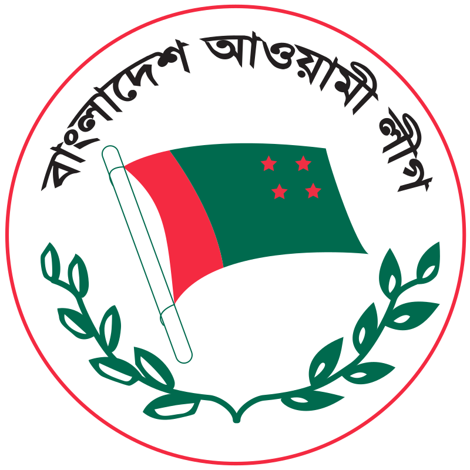
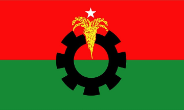

Gazipur District (Bengali: গাজীপুর জেলা), a district of Dhaka Division in Bangladesh. It has an area of 1741.53 km2.[3] Gazipur (town) has 9 Wards and 31 Mahallas. The area of the town is 49.32 km2. The town's population is 123,531; male 52.52%, female 47.48%; density is 2,505 per km2. Establishments such as Islamic University of Technology, Bangabandhu Sheikh Mujibur Rahman Agricultural University (BSMRAU), Bangladesh Rice Research Institute (BRRI), Bangladesh Agricultural Research Institute (BARI), Dhaka University of Engineering and Technology, and others are located here.
Gazipur City Corporation (Bengali: গাজীপুর সিটি কর্পোরেশন - in short: GCC)established in 2013, is one of the city corporations of Bangladesh. Before its establishment as city corporation, it was a municipal corporation. Current mayor of GCC is Jahangir Alam who was advocated by Bangladesh Awami League. Basically, Gazipur City Corporation is a formation under the local government administration of Bangladesh to regulate the city area of Gazipur, which is under the Ministry of Local Government & Rural Development (LGRD). Currently the minister of LGRD ministry is Sayed Ashraful Islam. Generally under local government, an election is held to elect a mayor of Gazipur City Corporation. Gazipur City Corporation's total area is 329.23 square kilometers with approximately has the population of 4,0,00,000 people in the city corporation area.
| si | Election | Mayor | Party |
| 01 | 2013 | M.A Mannan | Bangladesh Nationalist Party |
| 02 | 2018 | Jahangir Alam | Bangadesh Awami League |
| si | Party | Candidate | Votes | % | +/- | Logo |
| 01 | Awami League | Jahangir Alam | 4,000,10 |  | ||
| 02 | BNP | Hasan Uddin Sarkar | 1,97,611 |  | ||